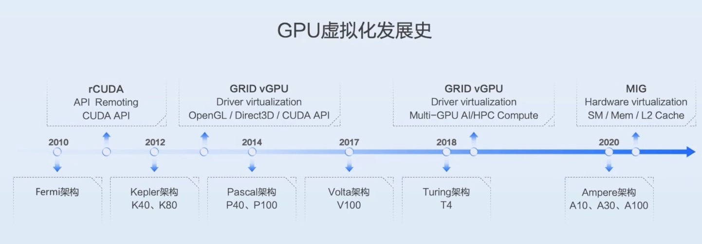
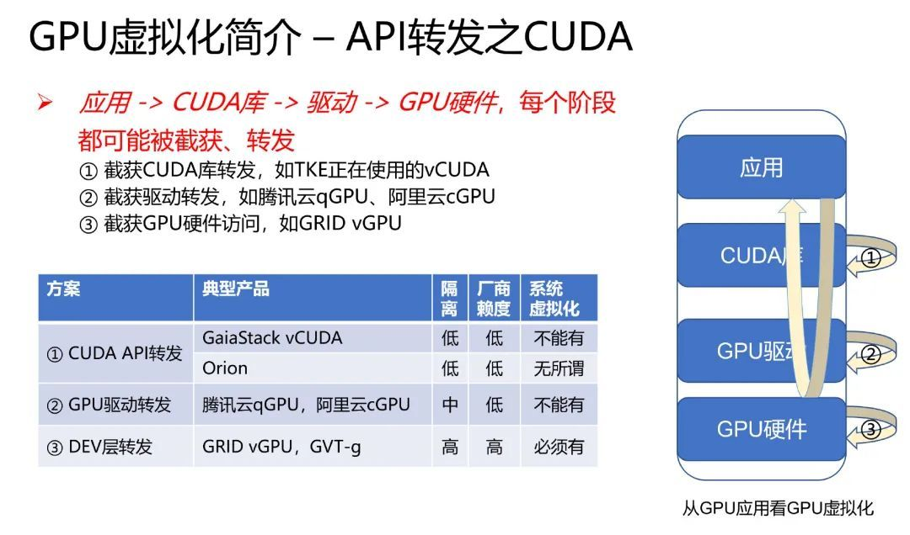
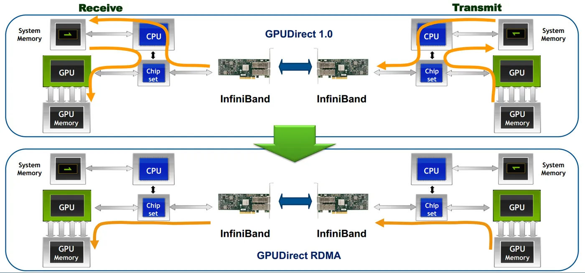

前言 大模型层出不穷，各家厂商争相出奇斗艳，那么模型如何部署，对外提供服务？模型推理服务与传统提供HTTP、GRPC远程调用的Web Server在部署层面，主要是对GPU的使用 以及所使用的运行框架或者说是推理引擎 （类比于传统的Web Server服务，往往是Nginx、Tomacat等Web容器），均有很大的区别。
GPU GPU是一种专门用于加速计算的处理器，在并行运算和计算密集型的任务上，有显著优势。
虚拟化 当前Nvidia在GPU市场处于绝对领先地位。Nvidia先后迭代了多个GPU的架构，不断提升GPU的处理能力。

Nvidia提出了自己的虚拟化方案vGPU（硬件虚拟化方案，厂商锁定，价格昂贵，且缺乏容器化支持）和MPS（故障隔离问题），但因各种原因，并不能满足业界对于GPU虚拟化的需求。
受限于Nvidia对GPU技术的锁定，业界主要从两个层面进行GPU虚拟化技术的演化：CUDA和Driver。因CUDA劫持（例如趋动科技 OrionX）需要侵入用户的开发环境，受版本更迭之苦，因此以阿里云cGPU和腾讯云qGPU为代表的的内核驱动技术目前应用广泛。因Driver的劫持在操作系统的内核层面进行一些更改，厂商有限开源（开源调度器逻辑，保留运行时隔离技术），因此也无法实现完全作为开源技术引入自建云，脱离厂商的锁定。

GPU虚拟化，主要应对的是显卡资源浪费的问题，让多个进程能很好地在单机单卡上切分算力和显存使用，对于A系列及以上的显卡显卡，可使用MIG，低端显卡则依赖于上述方案。
分布式 大模型因参数巨大，需使用较高的显存和算力，才能部署并支撑推理服务的并发请求。目前大模型的部署，常见于单机多卡和多级多卡。同一个大模型在做推理服务时，如果部署在多卡上，彼此之间要互相通信（传递数据），而且对带宽有一定的要求。
单机单卡 GPU上的存储与计算
单张GPU的处理单元上，存在多级缓存，这个可类比于CPU的处理器。在单卡GPU上，是有多个计算单元称为SM（Streaming Multiprocessors，流式多处理器）组成，一个SM又可以有多个SMP（SM Partition）组成。SM可以运行多个轻量级线程。
HBM（High Bandwidth Memory，高带宽内存），就是我们常说的显存。
SRAM，是指静态随机存取存储器（Static Random Access Memory），它是一种高速、易失性的存储器，用于计算机的缓存（cache）。
DRAM（Dynamic Random Access Memory，动态随机存取存储器） 是一种常用的 易失性内存 ，广泛应用于计算机、服务器、手机等设备中，作为 主内存（RAM） 使用。
如下图展示了，各存储之间的带宽差异。单机单卡，使用HBM通信，带宽在TB/s的数量级。
单机多卡 【AI系统】NVLink 原理剖析-阿里云开发者社区
【AI系统】分布式通信与 NVLink-阿里云开发者社区
单机多卡，微客服传统PCIe（Peripheral Component Interconnect Express）的带宽限制，Nvidia推出了一种吗行为NVLink的高速互联架构，来解决GPU之间的通信。NvLink（900GB/s ~ 1800GB/s） > PCIe3.0（32GB/s）。
多机多卡 浅析GPU通信技术（下）-GPUDirect RDMA-阿里云开发者社区
多机多卡，跨主机之间的通信，一般要通过RDMA来加速，主要分为InfiniBand和Ethernet两种网络传输方式。

推理引擎 了解了GPU的基本结构和通信，接下来需要使用推理服务引擎，将大模型使用GPU跑起来。该过程可以类比使用tomcat将web服务运行起来。
通常在部署大模型时，需要估算模型启动所需要的最少GPU显存，一般根据模型参数的精度，比如常用的bf16（2个字节），则可以用模型参数精度的子节数*模型参数量。例如：Qwen/Qwen2.5-VL-72B-Instruct，根据模型文件config.json是bf16，则启动最少需要144GB显存，进行推理时，还要额外提供KV Cache所需要的显存。
1 2 3 4 5 6 7 8 9 10 11 12 13 14 15 16 17 18 19 20 21 22 23 24 25 26 27 28 29 30 31 32 33 34 35 36 37 38 39 40 41 42 43 44 45 46 47 48 49 50 51 52 53 54 55 56 57 58 59 60 61 62 63 64 65 66 67 68 69 70 71 72 73 74 75 76 77 78 79 80 81 82 83 84 85 86 87 # Qwen2.5-VL-72B-Instruct 部署脚本 model=Qwen/Qwen2.5-VL-72B-Instruct model_path=/data/models/Qwen2.5-VL-72B-Instruct key=123456 image=xxx.xxxxx.xx/kserve-runtime/vllm-openai:v0.9.2 name=qwen-72b-vl port=xxxxx dtype=bfloat16 gpus='"device=6,7"' tp=2 max_model_len=131072 max_num_seqs=500 gpu_memory_utilization=0.9 docker rm -f $name docker run --name $name -d --restart always --runtime nvidia \ --gpus $gpus \ -v /data/models:/data/models \ -e VLLM_LOGGING_LEVEL=DEBUG \ -e VLLM_WORKER_MULTIPROC_METHOD="spawn" \ -e VLLM_USE_V1=1 \ -e VLLM_NO_USAGE_STATS=1 \ -e VLLM_CACHE_ROOT=/data/models/vllm_cache \ -e DO_NOT_TRACK=1 \ -e NCCL_DEBUG=TRACE \ -e VLLM_ALLOW_LONG_MAX_MODEL_LEN=1 \ -e VLLM_HTTP_TIMEOUT_KEEP_ALIVE=75 \ --ipc=host \ --network=host \ $image \ --model $model_path \ --served-model-name=$model \ --dtype $dtype \ --max-model-len $max_model_len \ --max-num-seqs $max_num_seqs \ --gpu-memory-utilization $gpu_memory_utilization \ --trust-remote-code \ --enable-prefix-caching \ --enable-auto-tool-choice --tool-call-parser=hermes \ --enable-chunked-prefill --max-num-batched-tokens 8192 \ --tensor-parallel-size $tp \ --api-key $key \ --host 0.0.0.0 \ --port $port \ --limit-mm-per-prompt image=5,video=5 # 测试脚本（需要保证模型服务器与图片服务器网络的连通性，如果不通，可使用base64 的方式传递图片数据） base=http://localhost:xxxxx/v1 model=Qwen/Qwen2.5-VL-72B-Instruct key=123456 curl -H 'content-type: application/json' -H "Authorization: Bearer $key" $base/chat/completions -d '{ "model": "'$model'", "stream": true, "messages": [ { "role": "system", "content": [ { "type": "text", "text": "You are a helpful assistant." } ] }, { "role": "user", "content": [ { "type": "image_url", "image_url": { "url": "http://10.xxx.xx.xxx:xxx/qwen2.5vl_arc.jpeg" } }, { "type": "text", "text": "图中描绘的是什么景象?" } ] } ] }'
1 2 3 4 5 6 7 8 9 10 11 12 13 14 15 16 17 18 19 20 21 22 23 24 25 # SGLang部署 python3 -m sglang.launch_server --model-path /data/models/DeepSeek-R1-Distill-Qwen-7B --served-model-name deepseek-ai/DeepSeek-R1-Distill-Qwen-7B --enable-metrics --trust-remote-code --context-length 65536 --watchdog-timeout 900 --log-requests --max-running-requests 5 --mem-fraction-static 0.5 --host 0.0.0.0 --api-key 123456 --port 8904
SGLang支持的模型能力还不如vllm，例如function call。
压测工具 自部署的模型服务，需要压测，以了解它的性能情况。目前主要使用了两种工具：
Evalscope 1 2 3 4 5 6 7 8 9 10 11 12 13 14 15 16 17 18 19 20 21 22 23 24 25 26 27 28 29 30 31 32 33 34 35 36 37 38 39 40 41 42 43 44 45 46 47 48 49 50 51 52 53 54 55 56 57 58 59 60 61 62 63 64 65 66 67 68 69 70 71 72 73 74 75 76 77 78 79 80 81 82 83 84 import numpyimport osfrom PIL import Imagew = 1280 h = 720 for i in range (3000 ): dir = f'images/{w} x{h} ' os.makedirs(dir , exist_ok=True ) imarray = numpy.random.rand(w, h, 3 ) * 255 im = Image.fromarray(imarray.astype('uint8' )).convert('RGBA' ) im.save(f'{dir } /{i} .png' ) from typing import Dict , Iterator, List import base64 from evalscope.perf.arguments import Arguments from evalscope.perf.plugin.datasets.base import DatasetPluginBase from evalscope.perf.plugin.registry import register_dataset from evalscope.perf.main import run_perf_benchmark def encode_image (image_path ): print (image_path) with open (image_path, "rb" ) as image_file: return base64.b64encode(image_file.read()).decode("utf-8" ) @register_dataset('custom' class CustomDatasetPlugin (DatasetPluginBase ): """Read dataset and return prompt. """ def __init__ (self, query_parameters: Arguments ): super ().__init__(query_parameters) def build_messages (self ) -> Iterator[List [Dict ]]: for item in self .dataset_line_by_line(self .query_parameters.dataset_path): prompt = item.strip() if len (prompt) > self .query_parameters.min_prompt_length and len ( prompt) < self .query_parameters.max_prompt_length: base64_image = encode_image(prompt) yield [ { 'role' : 'user' , 'content' : [ { "type" : "image_url" , "image_url" : { "url" : f"data:image/png;base64,{base64_image} " } }, { "type" : "text" , "text" : "请描述这张图片" }, ] } ] url = 'http://10.xxx.xxx.xxx:xxxxx/v1/chat/completions' model = 'Qwen/Qwen2.5-VL-72B-Instruct' api_key = '123456' dataset_path = 'dataset_1280x720' output_tokens = 1000 parallel = 10 number = parallel * 10 task_cfg = { "url" : url, "model" : model, "api_key" : api_key, "parallel" : parallel, "number" : number, "api" : "openai" , "dataset" : "custom" , "dataset_path" : dataset_path, "stream" : True , "min_tokens" : output_tokens, "max_tokens" : output_tokens, "extra_args" : { "ignore_eos" : True } } run_perf_benchmark(task_cfg)
Python benchmark_serving 1 2 3 4 5 6 7 8 9 10 11 12 13 14 15 16 17 export HF_ENDPOINT=https://hf-mirror.com export OPENAI_API_KEY=123456 python3 benchmark_serving.py \ --model Qwen/Qwen2.5-VL-72B-Instruct \ --base-url http://10.xxx.xxx.xx:xxxxx \ --backend openai-chat \ --endpoint /v1/chat/completions \ --dataset-name hf \ --dataset-path lmarena-ai/vision-arena-bench-v0.1 \ --hf-split train \ --num-prompts 500 \ --request-rate 50 \ --max-concurrency 20 \ --percentile-metrics ttft,tpot,e2el,itl \ --save-result # --save-detailed
K8s
Kubeflow 为在K8s中建设AIOps平台提供了大量的工具，包括Notebook、KServe、Pipelines、Trainer等。通过组合各个AI开源工具，充分发挥他们在AI开发生命周期中所起到的重要作用，避免重复造轮子，并且可以不断扩展新的工具进来，发展K8s的AI生态。